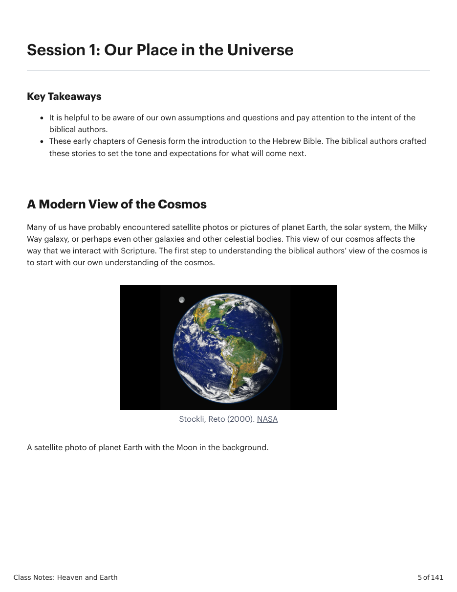
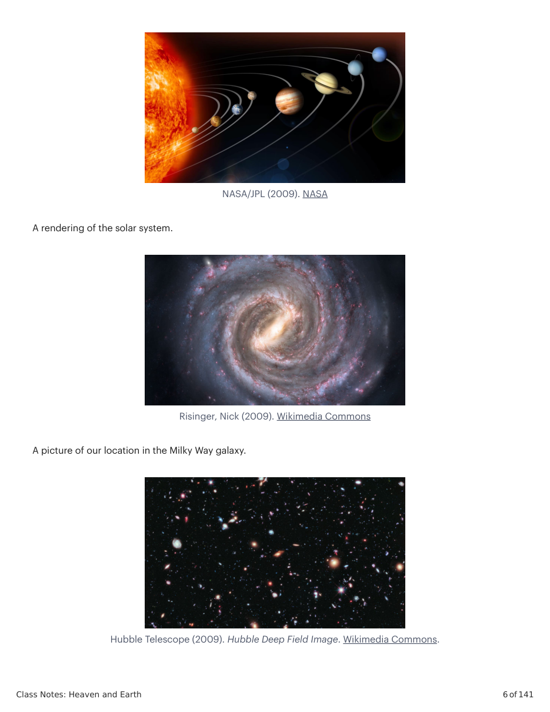
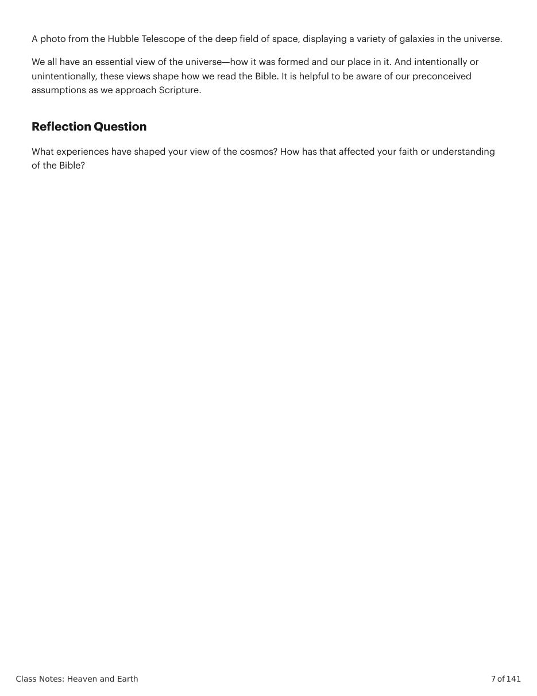

Stockli, Reto (2000). NASA
A satellite photo of planet Earth with the Moon in the background.
NASA/JPL (2009). NASA
A rendering of the solar system.
Risinger, Nick (2009). Wikimedia Commons
A picture of our location in the Milky Way galaxy.
Hubble Telescope (2009). Hubble Deep Field Image. Wikimedia Commons.
A photo from the Hubble Telescope of the deep field of space, displaying a variety of galaxies in the universe.
We all have an essential view of the universe—how it was formed and our place in it. And intentionally or unintentionally, these views shape how we read the Bible. It is helpful to be aware of our preconceived assumptions as we approach Scripture.
What experiences have shaped your view of the cosmos? How has that affected your faith or understanding of the Bible?


